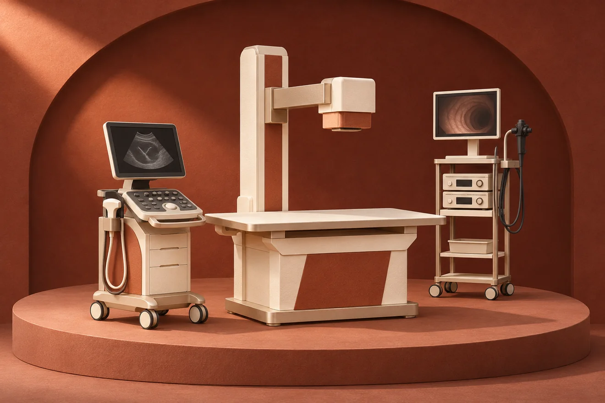

О центре
С 2012 года принимаем собак, кошек и других питомцев на Донецкой, 16А.
В команде — терапевты, хирурги, травматологи-ортопеды, анестезиолог и врач-лаборант. Для разных животных есть отдельные кабинеты. При центре работает ветаптека.
Диагностика в центре

ИллюстрацияОборудование клиники